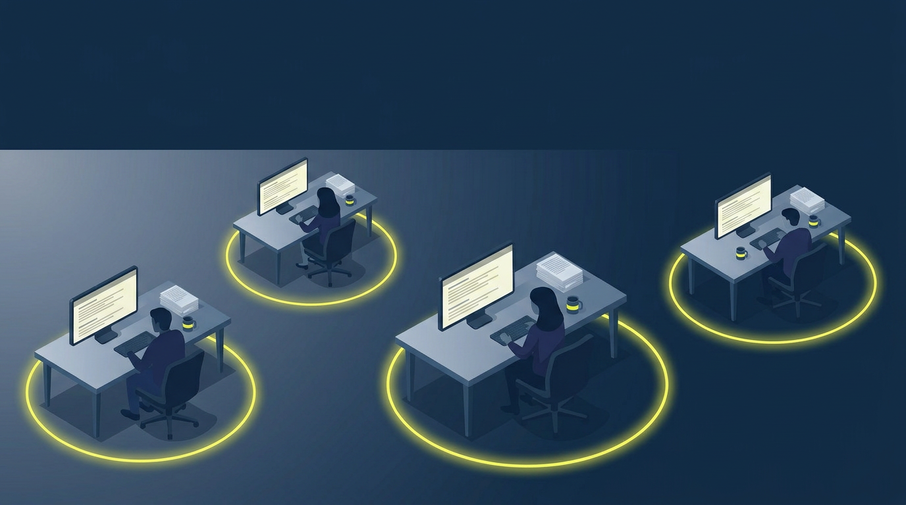
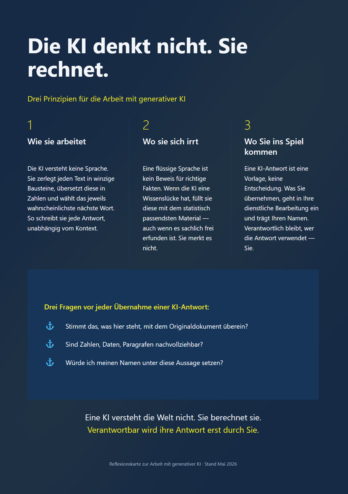

MODUL 1
Wie KI Texte erzeugt
Die Lernreise beginnt mit einem Erklärvideo. Sie sehen in knapp drei Minuten, wie eine KI Texte erzeugt — und warum eine flüssige Antwort allein nichts beweist.
Dauer: 2:40 Min.

Eine Lernreise zum Umgang mit generativer KI.
KI verändert die Verwaltungsarbeit. Diese Lernreise zeigt, wie Sie damit verantwortungsvoll umgehen.
Sie verstehen, wie generative KI Texte erzeugt, erkennen die typischen Risiken und wissen, welche Verantwortung Sie als Nutzerin oder Nutzer tragen.
Ein kurzes Erklärvideo, drei interaktive Vertiefungen, eine Reflexionskarte zum Mitnehmen.
Sie werden KI-Antworten gezielter prüfen, Halluzinationen erkennen und Ihre Rolle im Umgang mit dem Werkzeug bewusst wahrnehmen.
Keine. Die Lernreise richtet sich an alle, die zum ersten Mal mit generativer KI arbeiten.
Die Lernreise beginnt
Schritt 1 von 5
MODUL 1
Die Lernreise beginnt mit einem Erklärvideo. Sie sehen in knapp drei Minuten, wie eine KI Texte erzeugt — und warum eine flüssige Antwort allein nichts beweist.
Dauer: 2:40 Min.
MODUL 2
Klicken Sie auf eine der drei Grafiken, um sie im Detail zu erkunden. Jede Grafik enthält klickbare Bereiche, hinter denen sich weitere Erklärungen, Beispiele und Reflexionsimpulse verbergen.
MODUL 3
Eine kompakte Karte mit den drei Kernprinzipien — als Erinnerung, die neben Ihrem Bildschirm liegen kann. Schauen Sie online drauf oder laden Sie sie als druckbare PDF herunter.

Die Reflexionskarte ist im DIN-A4-Hochformat gestaltet und sowohl digital als auch ausgedruckt nutzbar.
Die drei Prinzipien begleiten Sie ab jetzt. Wenn eine KI-Antwort vor Ihnen liegt — Sie wissen, was zu tun ist.
ZUSATZANGEBOT
Über die Lernreise hinaus steht ein Podcast zur Verfügung. Er beleuchtet die Frage nach der menschlichen Verantwortung aus einer vertiefenden Perspektive. Etwa sieben Minuten Hörzeit.
Eine vertiefende Betrachtung
Dauer ca. 7 Min.